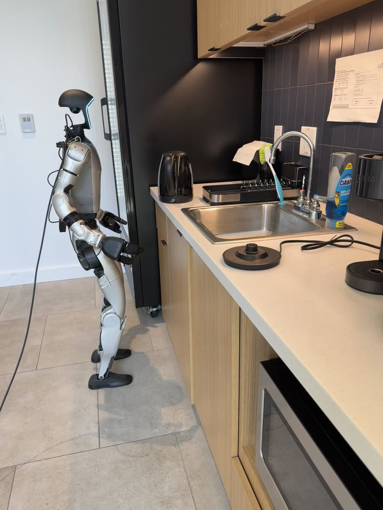

Humanoid Everyday · loco-manip-2__pick_up_kettle_place_on_base_and_turn_on
Pick up kettle place on base and turn on

Annotation
From the dedicated visual review of this video (humanoid_action_v1). Plain text · JSON
Observed outcome
Black kettle stands upright on the nearer round base in front of the sink, handle facing the robot. Right hand has withdrawn and lowered; left remains near the torso. Placement is visibly complete; successful electrical activation is not visually established.
Hand roles
- Right
Raises toward the kettle, closes around its handle, lifts and supports it throughout backward and forward walking, lowers it onto the round base, adjusts the kettle orientation, releases, and makes lower-switch pressing motions before withdrawing.
- Left
Remains low beside the waist/torso; does not grasp the kettle or base, support the load, or receive a transfer.
- Coordination
Single-hand transport and operation; leg stepping and torso translation move the held kettle to the nearer base. No bimanual support or hand-to-hand transfer is visible.
Robot-side evidence
- Active hand
right
- Confidence
high
- Evidence
The active arm is continuously traceable to the camera-near shoulder in the initial PNG and native frames 110, 270, 570 and 940. The torso front and foot toes point toward the counter (image right), while the long hanging rear panel and cable hardware lie on the opposite/back side (image left). This is a view from the robot's right side; the visible near shoulder, elbow and hand therefore belong to its anatomical right arm, rather than being named from image horizontal position.
Chronology
| Frames | Observation |
|---|---|
| 0–110 | Standing beside the counter, the robot raises and extends its anatomical right arm toward the kettle handle; left hand stays low. No substantial walking approach precedes this reach. |
| 111–254 | Right fingers close at the handle; the kettle lifts off the rear counter and moves outward toward the robot, remaining supported only by the right hand. |
| 255–310 | Robot draws the suspended kettle toward its upper torso, bending its right elbow and beginning a backward body shift. |
| 311–418 | Robot takes backward steps away from the counter while holding the kettle aloft; much of its body briefly goes beyond the image left edge. |
| 419–570 | Robot steps forward toward the nearer round base in front of the sink, carrying the kettle in the right hand without transfer or left-hand support. |
| 571–710 | Right arm lowers the kettle over the central connector and brings its bottom onto the round base. Kettle becomes visibly supported at the base, while right hand still holds the handle. |
| 711–982 | Right hand adjusts the seated kettle and changes its orientation so the handle moves from image right to the robot-facing/image-left side; hand opens and repositions around the handle/body. The kettle stays on the round base. |
| 983–1018 | Right hand descends from the handle toward the small protruding lower switch, makes a short downward motion, and retracts slightly; exact switch travel is partially obscured by the fingers. |
| 1019–1182 | Right hand moves back toward the lower switch and holds its finger tips at that area, with small pressing/adjusting motions. Kettle remains upright on the base. No clear illuminated indicator or boiling confirms activation. |
| 1183–1238 | Right hand rises away from the lower switch along the handle/body, then withdraws and lowers clear; kettle remains upright and unsupported by either hand on the round base. |
Differences from the publisher annotation
- The source instruction says walking to pick up the kettle; the visible clip begins already beside it and shows the substantial walking after pickup.
- The source instruction asserts turning it on; the observed ending establishes placement and switch-directed pressing motions but no unambiguous electrical activation.
Uncertainties
- Right fingers partly occlude the small lower switch during the pressing motions; exact actuation and whether the kettle is powered on cannot be established from the visible clip.
- The robot briefly moves partly outside the left image edge while walking backward, so the complete foot trajectory there is occluded.
Complete review record action_review.json
{
"prompt_protocol": "humanoid_action_v1",
"prompt_provenance": "visually_authored_from_video_and_initial_frame",
"reviewed_contact_sheets": [
"sheet_001.jpg",
"sheet_002.jpg",
"sheet_003.jpg",
"sheet_004.jpg",
"sheet_005.jpg",
"sheet_006.jpg",
"sheet_007.jpg",
"sheet_008.jpg",
"sheet_009.jpg",
"sheet_010.jpg"
],
"inspected_frame_stride": 2,
"inspected_sampled_frame_count": 620,
"initial_scene": "Robot stands beside the counter facing the black kettle at the rear beside the sink; an empty round kettle base with a central connector lies on the nearer counter in front of the sink. The camera-near arm is initially lowered and the opposite hand is low near the waist.",
"anatomical_side_evidence": {
"active_hand": "right",
"confidence": "high",
"evidence": "The active arm is continuously traceable to the camera-near shoulder in the initial PNG and native frames 110, 270, 570 and 940. The torso front and foot toes point toward the counter (image right), while the long hanging rear panel and cable hardware lie on the opposite/back side (image left). This is a view from the robot's right side; the visible near shoulder, elbow and hand therefore belong to its anatomical right arm, rather than being named from image horizontal position."
},
"arm_hand_roles": {
"right": "Raises toward the kettle, closes around its handle, lifts and supports it throughout backward and forward walking, lowers it onto the round base, adjusts the kettle orientation, releases, and makes lower-switch pressing motions before withdrawing.",
"left": "Remains low beside the waist/torso; does not grasp the kettle or base, support the load, or receive a transfer.",
"coordination": "Single-hand transport and operation; leg stepping and torso translation move the held kettle to the nearer base. No bimanual support or hand-to-hand transfer is visible."
},
"observed_sequence": [
{
"start_frame": 0,
"end_frame": 110,
"action": "Standing beside the counter, the robot raises and extends its anatomical right arm toward the kettle handle; left hand stays low. No substantial walking approach precedes this reach.",
"confidence": "high"
},
{
"start_frame": 111,
"end_frame": 254,
"action": "Right fingers close at the handle; the kettle lifts off the rear counter and moves outward toward the robot, remaining supported only by the right hand.",
"confidence": "high"
},
{
"start_frame": 255,
"end_frame": 310,
"action": "Robot draws the suspended kettle toward its upper torso, bending its right elbow and beginning a backward body shift.",
"confidence": "high"
},
{
"start_frame": 311,
"end_frame": 418,
"action": "Robot takes backward steps away from the counter while holding the kettle aloft; much of its body briefly goes beyond the image left edge.",
"confidence": "high"
},
{
"start_frame": 419,
"end_frame": 570,
"action": "Robot steps forward toward the nearer round base in front of the sink, carrying the kettle in the right hand without transfer or left-hand support.",
"confidence": "high"
},
{
"start_frame": 571,
"end_frame": 710,
"action": "Right arm lowers the kettle over the central connector and brings its bottom onto the round base. Kettle becomes visibly supported at the base, while right hand still holds the handle.",
"confidence": "high"
},
{
"start_frame": 711,
"end_frame": 982,
"action": "Right hand adjusts the seated kettle and changes its orientation so the handle moves from image right to the robot-facing/image-left side; hand opens and repositions around the handle/body. The kettle stays on the round base.",
"confidence": "high"
},
{
"start_frame": 983,
"end_frame": 1018,
"action": "Right hand descends from the handle toward the small protruding lower switch, makes a short downward motion, and retracts slightly; exact switch travel is partially obscured by the fingers.",
"confidence": "medium"
},
{
"start_frame": 1019,
"end_frame": 1182,
"action": "Right hand moves back toward the lower switch and holds its finger tips at that area, with small pressing/adjusting motions. Kettle remains upright on the base. No clear illuminated indicator or boiling confirms activation.",
"confidence": "medium"
},
{
"start_frame": 1183,
"end_frame": 1238,
"action": "Right hand rises away from the lower switch along the handle/body, then withdraws and lowers clear; kettle remains upright and unsupported by either hand on the round base.",
"confidence": "high"
}
],
"terminal_state": "Black kettle stands upright on the nearer round base in front of the sink, handle facing the robot. Right hand has withdrawn and lowered; left remains near the torso. Placement is visibly complete; successful electrical activation is not visually established.",
"selected_execution_status": "uncertain",
"outcome_components": {
"pickup_and_transport": "success",
"placement_on_base": "success",
"turning_on": "uncertain; pressing motions are visible but exact switch engagement and power activation are not clearly confirmed"
},
"uncertainties": [
"Right fingers partly occlude the small lower switch during the pressing motions; exact actuation and whether the kettle is powered on cannot be established from the visible clip.",
"The robot briefly moves partly outside the left image edge while walking backward, so the complete foot trajectory there is occluded."
],
"annotation_discrepancies": [
"The source instruction says walking to pick up the kettle; the visible clip begins already beside it and shows the substantial walking after pickup.",
"The source instruction asserts turning it on; the observed ending establishes placement and switch-directed pressing motions but no unambiguous electrical activation."
],
"evidence_frame_indices": [
0,
110,
210,
270,
310,
450,
570,
700,
830,
940,
972,
986,
994,
1010,
1068,
1140,
1188,
1200,
1238
],
"inspection_coverage": {
"all_contact_sheets_visually_viewed": true,
"source_initial_png_visually_viewed": true,
"sampled_range_inclusive": [
0,
1238
],
"native_frames_visually_viewed": [
110,
210,
270,
310,
450,
570,
700,
830,
940,
972,
986,
994,
1010,
1068,
1140,
1188,
1200,
1238
],
"notes": "Every returned contact sheet was visually inspected, covering every second decoded frame. Native transition frames and final frame were inspected, followed by source-camera initial PNG; no media transforms or evidence directories were created in world_model."
},
"video_id": "loco-manip-2",
"dataset": "Humanoid_Everyday",
"dedicated_review_agent": "review_he_loco_manip_2",
"review_source_video": "Humanoid_Everyday/loco-manip-2__pick_up_kettle_place_on_base_and_turn_on/third_person/original/original.mp4",
"source_frame_count": 1239,
"source_fps": 30.0,
"native_detail_frames": [
0,
110,
210,
270,
310,
450,
570,
700,
830,
940,
972,
986,
994,
1010,
1068,
1140,
1188,
1200,
1238
],
"world_model_prompt": "The humanoid grasps the black kettle by its handle with its right hand and lifts it from the rear counter. Holding it in the same hand, it steps backward, then walks forward to the round base in front of the sink, sets the kettle upright on the base, and turns its handle toward itself. It releases the handle, makes pressing motions at the small switch below it with its right fingers, and withdraws, leaving the kettle on the base. Keep the camera fixed; preserve robot geometry, physically valid joint motion, and normal gripper opening and closing.",
"original_task_instruction": "Walking to pick up a kettle, placing it on its base, and turning it on, demonstrating multi-step mobile manipulation with precise placement.",
"selected_segment": {
"start_frame": 0,
"end_frame_exclusive": 1239,
"reason": "Complete original single-task reference; no cropping or trimming requested."
},
"source_video_sha256": "abd99e176a4c5f826eb7ee369917d0b73b3ea3c860b9429edede31ebe998ce5e",
"review_completed_at": "2026-10-13T17:36:50.621543+00:00"
}